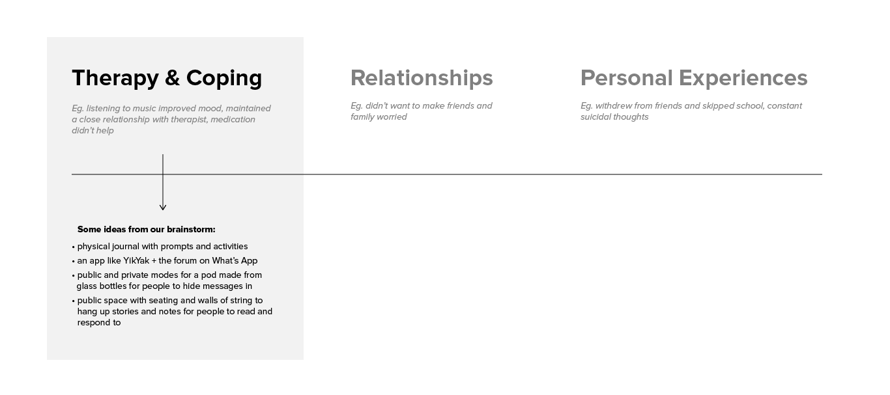
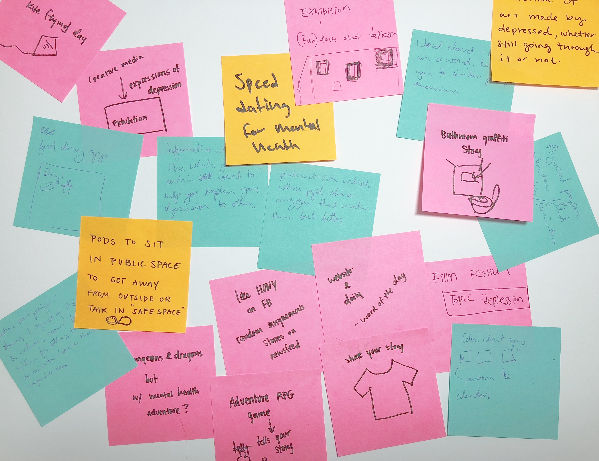
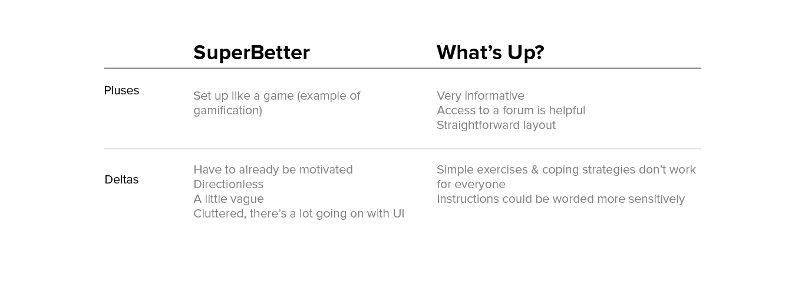
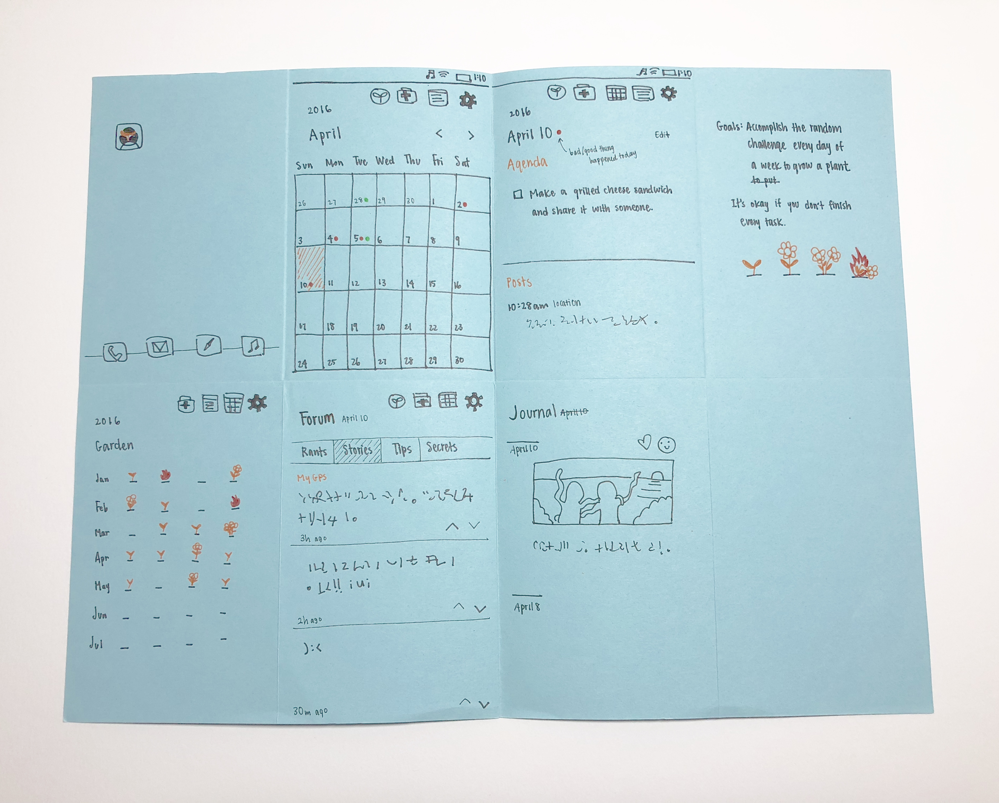
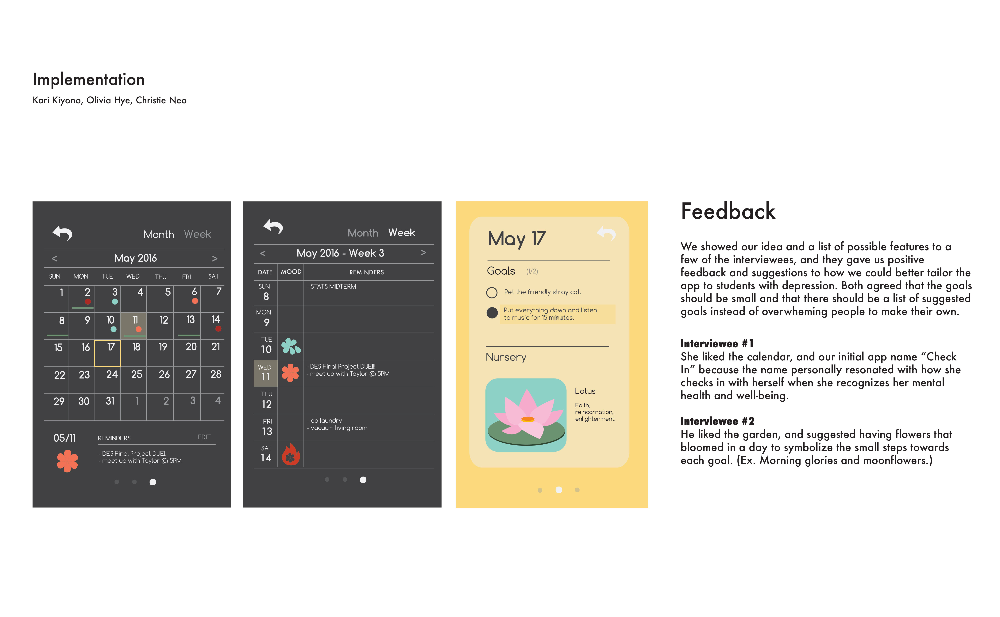
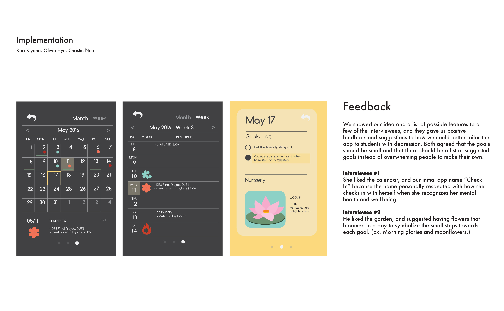

Our “Social Practices in Design” capstone class project explored depression in college students. Most of us know someone with symptoms of anxiety or depression, so I chose this social issue not only to learn how to help people close to us, but also to destigmatize depression and other mental illnesses.
I teamed up with Kari Kiyono and Olivia Hye to find a solution that would help college students with depression. My responsibilities were to create the visual identity, illustrations and wireframes over the course of 9 weeks.
How do you live with depression?
“A 2013 survey of college students found that 57% of women and 40% of men reported experiencing episodes of “overwhelming anxiety” in the past year, and 33% of women and 27% of men reported a period in the last year of feeling so depressed it was difficult to function.” (PsychologyToday.com, 2014)
Many studies and articles like the one above suggested that we were going through a “mental health crisis” of students suffering from mental illnesses. As students, we knew that students with depression had a hard time finding motivation to do tasks, but we had to find out more about our audience first before determining the problem we needed to solve.
Coping with Depression
We first reached out to classmates and friends for both one-on-one and group interviews. We also spoke with psychology professors and counselors at UC Davis's Student Health and Counseling Services CAPS clinic to get a better understanding on depression in the student population and how students get treatment on campus.
Despite having different experiences with depression, our interviewees had similarities in what brought them comfort and helped them get through the day. They were sensitive to seeing symptoms of depression (like withdrawal and apathy) in friends that were unaware of the fact that they had depression, and some found the process of getting help on campus frustrating and pointless because of how much effort it took to book an appointment and how impersonal the counseling sessions were.
From our interviews and research, we isolated statements that resonated with us and came to three major categories — therapy & coping, relationships, and personal experiences — and from therapy & coping we brainstormed the idea of having a journal or planner with different daily goals. It stood out to us because of coping methods (like expressive writing) that improve the user's well-being and health.
(Developmental psychologist Camelia Hostinar talked about how expressive writing "aids in effective coping, helps find meaning and to focus attention on positive aspects and provides an opportunity to clarify emotions.")
 While keeping user's needs in mind, we set 3 guiding principles (or requirements) for our journal with the goal of being able to visually track personal growth and accomplishments over time.
Design Requirements
Bringing back our interviewees
To get a better understanding of how effective current apps (as of 2016) are at treating depression, we had some of our interviewees try out popular apps that focused on improving the user's well-being like SuperBetter and What’s Up. They liked that some apps were informative on coping techniques, but disliked how other apps felt directionless and took motivation to use.
We tested paper prototypes of the app with our interviewees and some of their feedback was to keep the goals small (with some that are quick-to-accomplish), and have a suggested list to choose from to avoid overwhelming the user to create their own.
Paper mockup with potential features to get a sense of how the user would navigate through the app.
Developing the visual identity of the app. We wanted to focus on each individual’s growth and ability to reflect. Some of our earlier brainstormed names included: bloom, begin and how are you.
Be There: helping you manage a daily routine
Our final product was "be there", a journal app with a goal garden to recognize the user's progress. The main focus of the app was to help UC Davis college students maintain a daily routine through completing different goals. Each day corresponds to a flower that blooms when the goals are completed, and can be placed on a 'plot' for the user to view. The user can also write and track their daily mood in the journal and find information on local health resources and information about depression and coping methods.
(Note: I revisited this project in September 2018 to update some of the UI and fix proportions. Below is our final presentation from 2016.)
 

For not knowing much about experience design outside of IDEO's field guide at the time, this project was a good learning experience in creating a solution to a specific resource gap. However, we should've spent more time testing quick prototypes and addressing our user's needs better. Using more quantitative research methods and rewording our prototyping feedback questions to get at how well the app works as intended instead of superficially asking our interviewees what they liked or didn't like about our prototype would’ve given us more helpful information. If I were to revisit this, I might focus on how people navigate through the app and test whether the app helps people manage their daily lives by surveying people's mood and how much time they think they don't use productively before and after using the app.